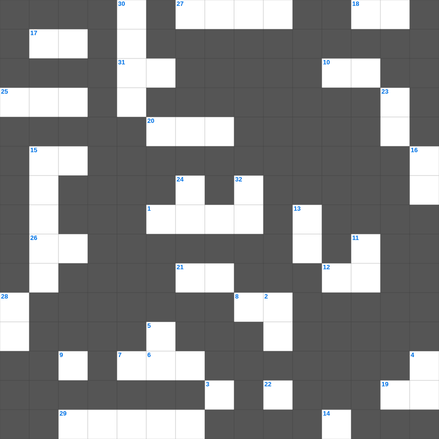

고린도전서 마스터 50
📌 서비스 정의
십자가로세로는 교회 주보와 주일학교에서 사용할 수 있는 성경 기반 가로세로 퍼즐 서비스입니다. 성경 인물, 사건, 핵심 구절을 바탕으로 제작되었습니다. 온라인 풀이 및 인쇄 기능을 제공합니다.
📖 고린도전서란?
고린도전서는 분열과 윤리적 문제로 어려움을 겪던 고린도 교회에 보낸 바울의 서신으로, 교회의 일치와 사랑, 영적 은사에 대한 가르침을 담고 있습니다.
📚 고린도전서의 주요 사건·주제
교회 분열 문제 다룸 · 성도의 윤리 문제 권면 · 성찬과 예배 질서에 대한 가르침 · 사랑장(고린도전서 13장) · 부활에 대한 가르침(고린도전서 15장)
고린도전서를 주제로 한 고린도전서 성경공부 자료입니다. 35개의 단어를 맞춰보세요! 가로세로 낱말 퍼즐 형식으로 고린도전서의 핵심 내용을 재미있게 복습할 수 있습니다.

📝 가로 힌트
1. 백성들이 고리대금업자들 때문에 힘들어할 때 느헤미야가 보인 반응
6. 그가 그의 말씀을 보내어 그것들을 녹이시고 바람을 불게 하신즉 이것이 흐르는도다
7. 바람을 다스려 바람을 이것하게 할 사람도 없고 죽는 날을 제어할 사람도 없으며
8. 내 영혼아 네가 어찌하여 이것 하며 어찌하여 내 속에서 불안해하는가
9. 우매한 자들은 이것을 많이 하거니와 사람은 장래 일을 알지 못하나니
10. 내가 내 양 떼를 찾고 찾되 목자가 양 가운데에 있는 날에 양이 이것되었으면 그 떼를 찾는 것 같이
12. 백성들이 죄를 자복하며 견고한 이것을 세워 인을 침
14. 행위가 온전하여 여호와의 율법을 따라 행하는 자들은 이것이 있음이여
15. 마땅히 행할 길을 이것에게 가르치라 그리하면 늙어도 그것을 떠나지 아니하리라
15. 내가 이르되 슬프도소이다 주 여호와여 보소서 나는 이것이라 말할 줄을 알지 못하나이다
17. 호흡이 있는 자마다 여호와를 이것 할지어다
18. 하나님은 우리의 피난처시요 힘이시니 환난 중에 만날 큰 이것이시라
19. 그가 가는 베 옷을 입은 사람에게 이르되 너는 바퀴 사이 여호와의 이것 아래로 들어가
20. 에스겔이 환상 중에 본 새 예루살렘의 문 개수
21. 느헤미야가 밤에도 옷을 벗지 않고 곁에 둔 것
25. 너의 행사를 여호와께 맡기라 그리하면 네가 경영하는 것이 이것되리라
26. 너는 그들 때문에 두려워하지 말라 내가 너와 함께 하여 너를 이것 하리라
26. 여호와께서는 자기 백성을 기뻐하시며 이것으로 겸손한 자를 아름답게 하심이로다
27. 보라 형제가 연합하여 동거함이 어찌 그리 선하고 이것한고
29. 자기의 죄를 숨기는 자는 형통하지 못하나 죄를 자복하고 버리는 자는 이것을 얻으리라
📝 세로 힌트
2. 날 때가 있고 죽을 때가 있으며 이것을 때가 있고 심은 것을 뽑을 때가 있으며
3. 이것은 어떤 모양이라도 버리라
4. 여호와의 영광이 성전 문턱을 떠나서 이것들 위에 머무르니
5. 부림절에 백성들이 서로 주고받은 것
11. 마음의 즐거움은 이것이라도 심령의 근심은 뼈를 마르게 하느니라
13. 백성들이 하나님께 약속한 것 '이방 사람과 이것하지 않겠다'
15. 예루살렘 딸들아 내가 비록 검으나 이것하니 게달의 장막 같을지라도
16. 네 백성과 네 거룩한 성을 위하여 이것 이레를 기한으로 정하였나니
22. 죽을 자가 죽는 것도 내가 기뻐하지 아니하노니 너희는 스스로 돌이키고 이것지니라
23. 너희는 이것의 길로 가서 물어보라 선한 길이 어디인지 알아보고 그리로 가라
24. 네 의복을 항상 이것게 하며 네 머리에 향 기름을 그치지 아니하도록 할지니라
28. 분노하기를 더디 하는 것이 사람의 이것이요 허물을 용서하는 것이 자기의 영광이니라
30. 예레미야서의 총 장수
32. 에돔 땅을 돌아가려 하니 백성의 마음이 이것함
🧩 이 퍼즐에서 배우는 내용
이 퍼즐은 고린도전서 마스터 50의 핵심 단어와 개념을 자연스럽게 복습할 수 있도록 구성되었습니다. 주일학교 수업이나 개인 성경공부에서 학습 내용을 점검하는 용도로 바로 활용할 수 있습니다.
🧑🏫 교회 교육 자료 활용
이 퍼즐은 주일학교 교재 추천 자료로 활용할 수 있고, 주일학교 주보에 넣기 좋은 분량으로 구성되어 있습니다. 수업용 주일학교 교안에 활동지로 붙이거나, 예배 후 복습용 주일학교 공과교재로 바로 사용할 수 있습니다.
🏷️ 키워드
고린도전서 성경공부 자료, 고린도전서, 십자가로세로, 성경퀴즈, 말씀퀴즈, 가로세로퍼즐, 주일학교 교재 추천, 주일학교 주보, 주일학교 교안, 주일학교 공과교재